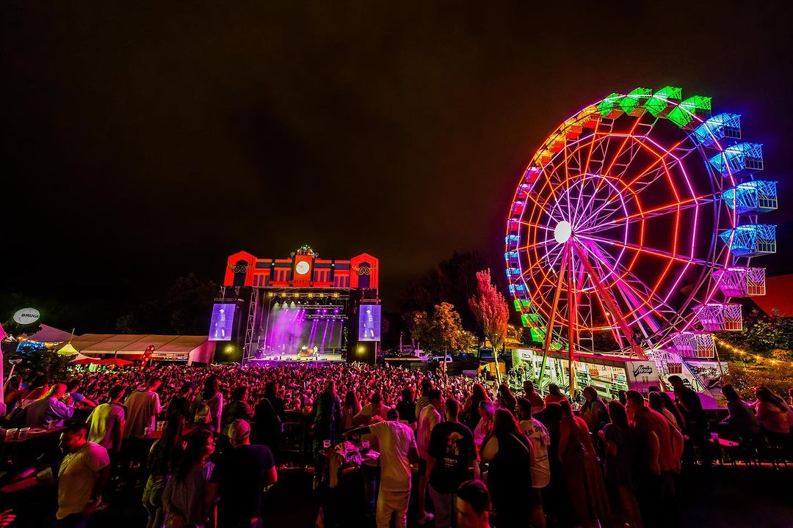

Música
Metrópoli Gijón 2026
Metrópoli Gijón es un gran festival de cultura, música y entretenimiento que se celebra anualmente durante el verano en el Recinto Ferial Luis Adaro de Gijón.
Comprar Entradas